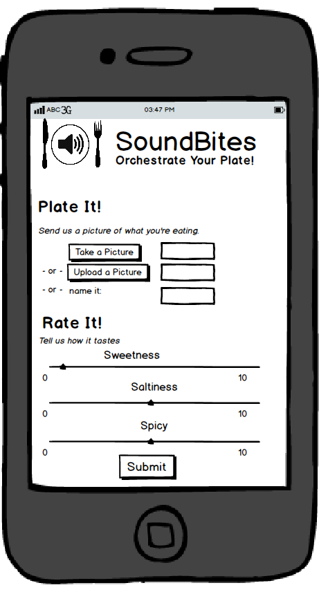
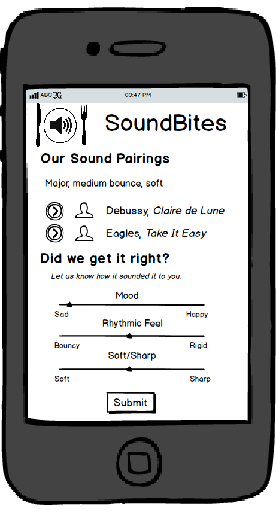

What Is SoundBites?
SoundBites is an app that matches up tastes with music
Does lemon meringue pie make you hear Beethoven? Or perhaps that cucumber salad would taste even better with a bit of Miles Davis in the background.
SoundBites helps you find the music to match your tastes, and vice-versa. This makes thinking about music and food fun and interesting.
It also helps people understand taste synesthesia.
How It Works
1. Plate It.
Tell SoundBites what you're eating, or take take a picture of your food.
2. Rate It.
Rate your food in various categories, such as sweetness, spicyness, or crunchiness.
Hear It.
SoundBites searches its database and finds music to match your food.
Train It.
Train SoundBites with your musical preferences to get better recommendations.
As people train SoundBites with their musical tastes, it begins to see patterns in how people think about food and music.
This makes thinking about music and food fun and interesting.
Status
SoundBites is just getting started!
Want to Be Involved?
If you want to sign up for SoundBites, or talk more about the interaction of food and music, you can join our Google Group here: https://groups.google.com/forum/#!forum/soundbites.